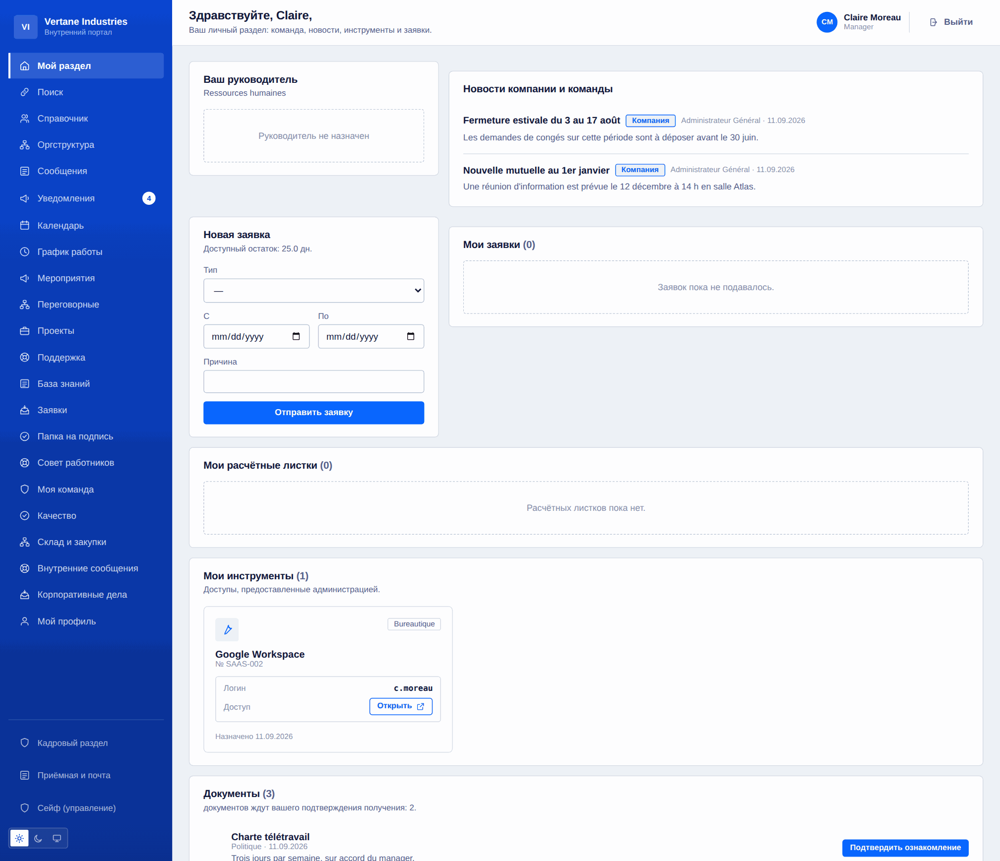
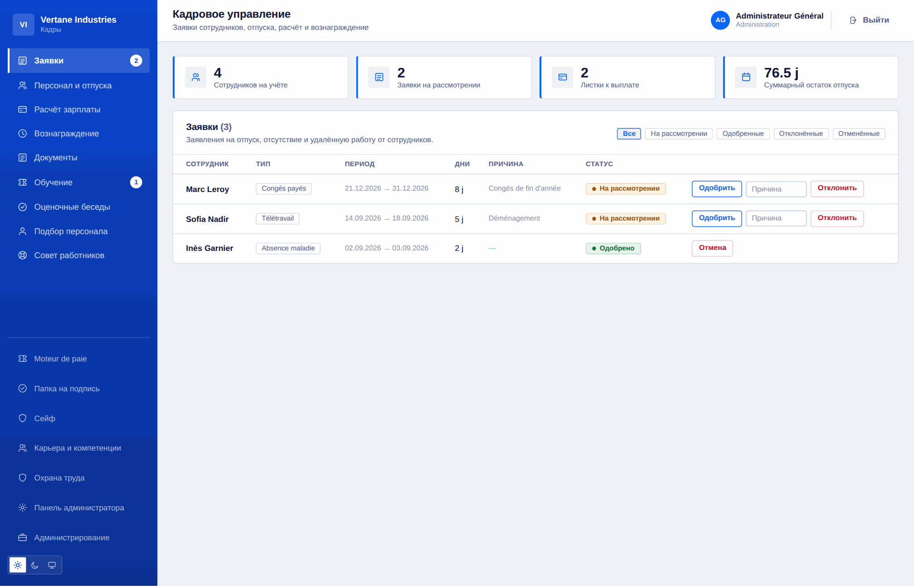
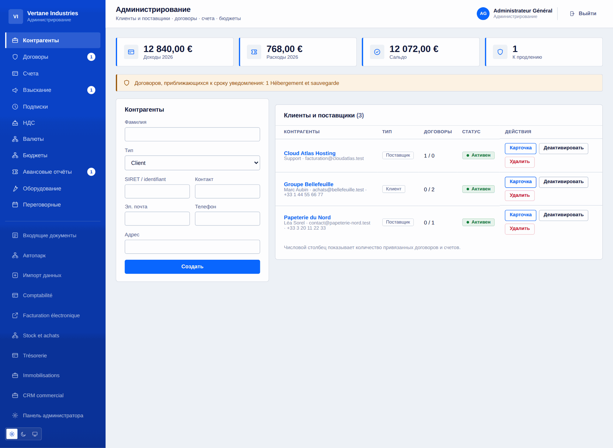
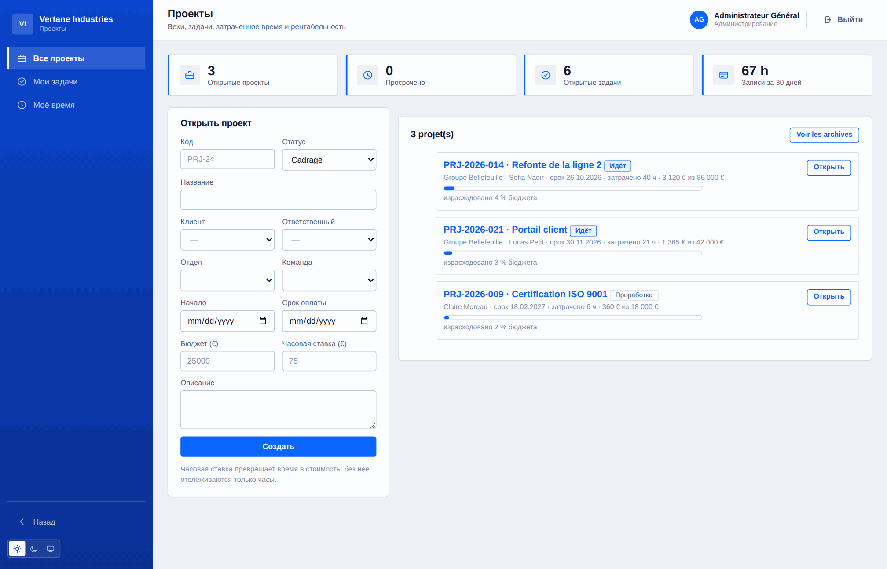
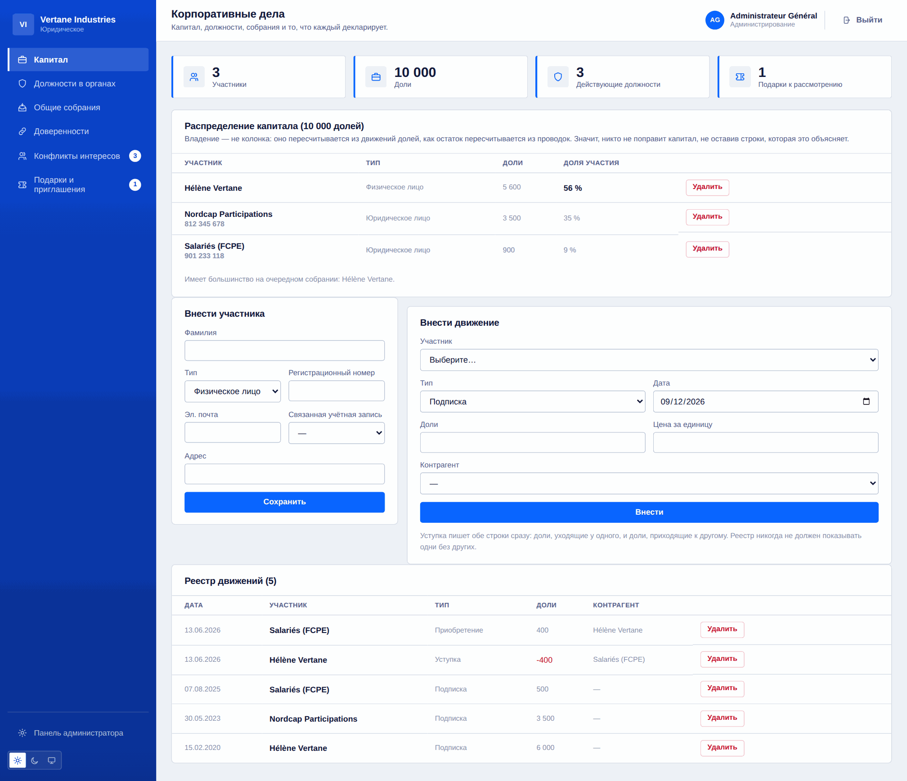

Всё, что умеет Toutadmin
Полный список, область за областью. Каждая строка — выпущенный и протестированный код, а не намерение.
121 · Функции с пометкой «модуль» включаются из консоли, когда они нужны.
Основа и организация
То, на чём держится остальное: учётные записи, привязки и словарь, общий для всех разделов.
- Учётные записи и совмещаемые роли: администратор, кадры, финансы, ИТ, доверенное лицо по сообщениям
- Руководитель выводится из реального подчинения, никогда не назначается вручную
- Подразделения и команды, несколько руководителей на периметр, привязки перечитываются при каждом запросе
- Наглядная оргструктура вместе с руководством и люди, не привязанные никуда
- Справочник с поиском и фильтрами, видимость задаёт только администрация
- Внутренняя переписка и служебный адрес, настраиваемый администрацией
- Общий поиск разделён у источника: то, что вам нельзя видеть, вообще не ищется
- Центр уведомлений для каждого, с отметкой о прочтении
- Массовый импорт из CSV: проверенный предпросмотр, запись «всё или ничего»
- Мастер установки, настройки экземпляра, семь подключаемых модулей
- 16 языков, 3 палитры, светлая/тёмная/системная тема, адаптивный интерфейс

Кабинет сотрудника
Страница, которую все открывают утром: то, что касается именно их, и ничего больше.
- Личная сводка: руководитель, новости, заявки, документы к подтверждению
- Отпуска, отгулы, отсутствия и удалённая работа: рабочие дни считаются, выходные исключаются
- Актуальный остаток отпуска, история обоснованных корректировок
- Расчётные листки доступны и хранятся пятьдесят лет в защищённом хранилище
- Личный календарь и общий календарь команды
- График недели, дежурства, постоянные смены
- Выданные инструменты со своим логином — ни один чужой пароль не хранится
- Профиль: фото, описание, телефон, язык, пароль, закрытие всех сеансов
- Учёт времени секундомером для фрилансеров, одновременно только один
- Декларация интересов и подарков, видимая только самому себе

Кадры
Дело сотрудника, от прихода до ухода, со всеми сроками, которые оно приносит.
- Утверждение заявок со списанием остатка, мотивированный отказ, отмена с возвратом дней
- Расчётные листки: создание, отслеживание выплаты, пакетная генерация
- Документы компании с именной отметкой о получении
- Обучение: каталог, сессии, записи, стоимость и длительность
- Ежегодные беседы: кампания, шаблон, протокол
- Приём и уход: сопровождаемые чек-листы, ответственный и срок по каждой задаче
- Компетенции и допуски с датой продления и заблаговременным предупреждением
- Личные встречи: общий итог, заметки руководителя хранятся отдельно
- Цифровое хранилище доступно и после ухода, документы опечатаны отпечатком
- Простая электронная подпись: упорядоченный маршрут, отпечаток, печать, справка
- Срочные договоры: запись закрывается сама в назначенный день

Подбор и таланты
От откликов до первого дня, без промежуточной таблицы.
- Вакансии и отклики, отслеживаемые по этапам
- Приём резюме: PDF, DOCX или текст, записываются вне репозитория
- Извлечение содержимого и база резюме с поиском
- Взвешенные критерии, оценка, порог, ранжирование откликов
- Принятый кандидат сразу переходит в маршрут приёма
- Внутренние опросы и барометр настроений, анонимные по построению
- Менее пяти ответов — результат не показывается

Охрана труда и представительство
Обязанности, которые нужно вести письменно и которые напоминают о себе сами.
- Оценка рисков: рабочие участки, опасности, балл, меры, датированный пересмотр
- Журнал несчастных случаев и происшествий без последствий, дни нетрудоспособности
- Средства защиты: именная выдача, срок годности, замена
- Медосмотры: при приёме, периодический, при возвращении, по запросу
- Представительство: выборы, список избирателей, анонимное голосование, мандаты и их окончание
- Заседания органа, льготы и услуги для сотрудников
- Раздел управления закрывается сам с окончанием мандата

Финансы и администрация
Контрагенты, договоры, деньги, которые приходят, и те, которые уходят.
- Клиенты и поставщики, полная карточка: контакты, договоры, счета
- Договоры и прежде всего сроки уведомления: крайняя дата расторжения считается и напоминается
- Счета в обе стороны, сумма с налогом считается, просрочка выводится из срока оплаты
- Бюджеты по подразделениям и годам, расход агрегируется автоматически
- Авансовые отчёты: подача, утверждение, возмещение — никогда одно без другого
- Документы соответствия контрагентов, датированные и с напоминанием за сорок пять дней
- Оценки поставщиков в баллах: значима последняя проверка, а не среднее
- Мультивалютность с курсом, зафиксированным при выпуске каждого документа
- Периодическое выставление счетов: подписка — форма, счёт — документ
- Автоматическое чтение входящих счетов и приём по IMAP бухгалтерского ящика

Бухгалтерия, зарплата и НДС
Модули выключены по умолчанию и включаются тогда, когда нужны.
- Двойная запись: план счетов, журналы, оборотно-сальдовая ведомость, главная книга
- Несбалансированная проводка отклоняется, и сообщение говорит, на сколько
- Счёт превращается в проводку одним щелчком; выгрузка CSV для бухгалтерии
- Расчёт зарплаты: настраиваемые ставки, от начисленного к выплате, взносы, стоимость для работодателя
- Подробный листок построчно, пакетная генерация, калькулятор
- Декларации по НДС: начисленный, к вычету, разбивка по ставкам, переносимый остаток
- Поданная декларация не пересчитывается: это документ, а не сводка
- Электронные счета: проверка EN 16931 и выгрузка XML CII
- Казначейство: счета, движения, сверка, прогноз на двенадцать недель
- Основные средства: линейная и уменьшаемая амортизация, остаточная стоимость

Закупки, склад и взыскание
Что заказано, что пришло, что выставлено — и что должны нам.
- Заявки на закупку утверждает руководитель, а свыше порога — финансовая служба
- Заказы, приёмки и сверка по трём: заказано, получено, выставлено
- Принять больше заказанного нельзя; расхождение в счёте называется, но не блокируется
- Позиции, движения, порог оповещения: остаток — это сумма движений
- Строка, привязанная к позиции, попадает на склад в момент приёмки
- Реестр дебиторской задолженности по срокам просрочки
- Ступенчатые напоминания: напоминание, повторное, претензия, в зависимости от уже отправленного
- Каждое напоминание фиксируется с уровнем и датой

Проекты, время и рентабельность
Знать, на каком этапе проект и во что он на самом деле обошёлся.
- Проекты связаны с клиентом, подразделением, командой и ответственным
- Датированные вехи и задачи по колонкам статусов, с приоритетом и оценкой
- Время списывается на проект и задачу, не более 24 ч за запись
- Рентабельность: часы, стоимость по ставке, оставшаяся маржа, доля израсходованного бюджета
- Три круга прав: управление, ответственный, участники
- Время по людям и состояние проектов на сводке руководства

Поддержка и знания
Внутренние и клиентские обращения в одном потоке и ответы, которые остаются.
- Внутренние и клиентские заявки, приоритет, источник, назначение
- Срок первого ответа выводится из приоритета и пересчитывается с момента открытия
- Внутренние заметки невидимы заявителю и не считаются ответом
- Разделение по категориям: кадровое обращение не покидает кадры
- База знаний по категориям, полнотекстовый поиск, настраиваемая область
- Показатели: открытые заявки, просроченные, средний срок

Операции и хозяйственная часть
График, качество, помещения, транспорт, приём посетителей.
- График по человеку и дню: смены, дежурства, постоянные смены, удалённая работа
- Пересечение или уже согласованное отсутствие: интервал отклоняется при создании
- Повторяемые сменные схемы, ночные смены, публикация недели
- Кто сейчас на дежурстве, с номером телефона
- Качество: несоответствия, коренные причины, корректирующие действия и проверка результативности
- Внутренние аудиты: наблюдения, сводка, наблюдение, поднятое до несоответствия
- Оборудование выдано и возвращено, с историей держателей
- Помещения и брони, пересечение отклоняется с указанием, кто занимает
- Автопарк: обслуживание, техосмотр, страховка, происшествия, пробег
- Приём: журнал посетителей, список находящихся в здании, входящая и исходящая почта

Руководство и управление
На что смотрит руководство и что оно решает.
- Сводка: численность, отсутствующие, выставлено, маржа, фонд оплаты труда, деньги, нагрузка поддержки
- Цели и ключевые результаты, каждый в своей шкале, в том числе убывающей
- Заседания: созыв, повестка, отмеченная явка, протокол
- Реестр решений с обоснованием — тем, что ищут два года спустя
- Поручения с ответственным и сроком, привязанные к своему решению
- Реестр рисков: исходная и остаточная оценка, матрица 5 × 5, обработка, пересмотр
- Корпоративные мероприятия: вместимость, автоматический лист ожидания, регистрация, бюджет
- Сроки из всех разделов в одном отсортированном списке

ИТ и разработка
Парк программ, доступы, инциденты и то, что выпускает команда.
- Парк программ: лицензии как ограничение, годовая стоимость, продления
- Пересмотр доступов: сначала закрытые записи, затем административные права
- ИТ-инциденты с отметками времени и реально измеренным средним временем восстановления
- Каталог сервисов: критичность, ответственный, репозиторий, документация
- Журнал выпусков по средам и показатели поставки
- Резервные копии: ежечасный архив, проверенная целостность, восстановление, вынос
- REST API на чтение с областями доступа, подписанные исходящие вебхуки
- Полная выгрузка экземпляра в JSON вместе с документами, без секретов

Соответствие, корпоративные вопросы и персональные данные
То, что компания должна уметь доказать, ведётся по ходу дела.
- Реестр участников: доля выводится из движений, уступка записывается двумя частями
- Полномочия органов со сроком, отзывом и заранее отмеченным окончанием
- Общие собрания: кворум в долях, решения, голоса, протокол
- Доверенности: предмет, предел суммы, срок, отмеченное окончание
- Конфликты интересов и подарки: каждый декларирует за себя, администрация рассматривает
- Зашифрованный внутренний канал сообщений, назначенные доверенные лица, анонимное отслеживание по коду
- Журнал аудита со временем, выгружаемый и опечатанный цепочкой отпечатков
- GDPR: реестр обработки, выгружаемое право доступа, обоснованное удаление
- Настраиваемые маршруты согласования: формы, пороги, согласующие по функциям

Чего-то не хватает?
Скажите нам. Продукт растёт партиями, и запросы компаний, которые им пользуются, идут первыми.
Начните бесплатно, смените тариф, когда вырастете
До пяти сотрудников всё бесплатно. Дальше — 5 € за сотрудника в месяц, со снижением от двухсот пятидесяти, или 10 000 € один раз за бессрочную лицензию. Чтобы попробовать, карта не нужна.